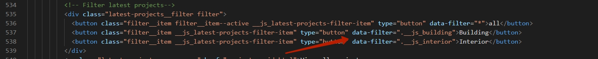

Project Structure
The structure of the Larson HTML template:
- css - all common scripts used on the pages, theme styles included in main.css and dark-theme.css files
- favicons - all favicons, favicons were generated here https://realfavicongenerator.net/
- fonts - all fonts used on the pages
- img - icons and backgrounds for the project
- picture - photo images for the project
- js - all common scripts used on the pages file
- php - the script for the site forms
- video - all videos for the site
Head
Revolution Slider
All Revolution sliders are built with plugin Revolution jQuery Slider, you can find documentation here

The slider consists of layers, in them you can set the position of the elements using data-x, data-y, data-hoffset, data-voffset
The main image of the each slide is in the folder img
Also full documentation you can find hereSwiper Slider
Swiper slider works with Swiper jQuery plugin. It's easy to customize, see documentation
Change filter projects
Change the value of the data-filter attribute here. The css class is used as the value

Add a css class to the slides. There can be several classes.
Number Counter
To change numbers, change this values:
Page with Parallax Piling plagin
Pages piling works with jQuery PagePiling plugin
Home parallax
Home interior
To make white text in section add class dark
Filters:
Each filter has a data attribute with a class (see line 355-358 in the screenshot). Each element has the same classes (see line 364 in the screenshot)
Retina support:
To support retina displays, you need an image that is twice the size. You also need to add the srcset attribute to the img tag with the path to the image. Don't forget to add 2x.
Modal
Modals work with the fancybox plugin It is easy to configure, see the documentation